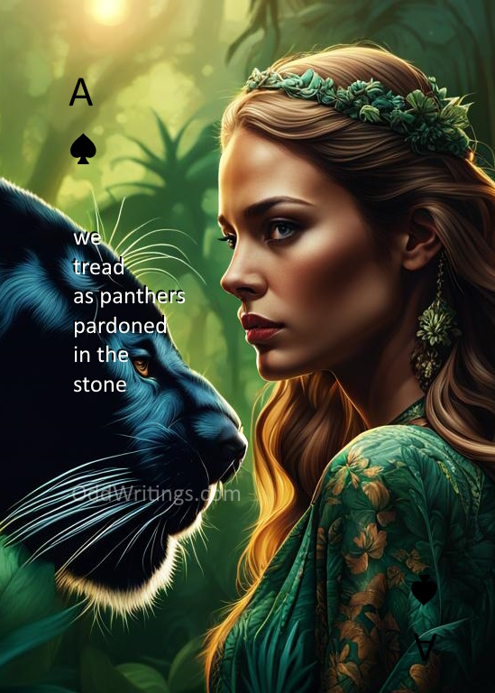

Soon after a Poetry Card is sold, it will be replaced by a new one of the same suit and number but different poem and graphic.
Ideally, I would like to have these mass-produced as actual physical cards tied to a web app which communicates with an NFT marketplace (i.e. "phygital cards"). The back of each card contains a QR Code for a web app. Here are 2 possible scenarios demonstrating utility:
- person arrives to play cards with 300 dollars in his wallet
- person chooses any card in the deck and scans the QR Code
- person enters 100 dollars into web app, meaning he wants to risk no more than 200 dollars that evening
- smart contract determines which cards are available (i.e. which card NFTs are listed for sale) within X percent of 100 dollars.
- web app displays the choices. the person picks one or if there are none, he can wait or stake a different amount
- if the person chooses to wait, the web app makes offers of 100 dollars on various NFTs. the ones that accept begin to appear; the person then chooses one. web app purchases the NFT which goes into his wallet
- person plays cards, betting on each play
- at some point between games, he sees he is 50 dollars down.
- user checks the status of his NFT
- if there are offers equal to or more than what he paid plus 50 dollars, he can choose to unstake the NFT, which will sell it. He can then restake on another card if desired, for a different amount if desired. note that he is now ahead.
- if there are no offers more than what he paid plus 50 dollars, or if he doesn't like the prices, he can choose to offer his NFT for sale for whatever price he likes and then wait or continue playing.
- the above pattern continues
- the person no longer wants to play. it happens that at this point the user is down by 20 dollars
- user checks the status of his NFT
- say there are no offers equal to or more than what he paid most recently, plus 20 dollars
- if there is at least one offer, he can choose to unstake the card and take the loss; or
- he can choose to offer his NFT for sale for no more than what he paid plus 20 dollars; or
- he can choose to keep the card in his wallet and take it out of the circulation of the game. (yes he lost money, and COULD wait a while to eventually break even, but man he REALLY likes that card). In this case a new card with different graphic and poem, but same suit and number, will take its place in the deck.
- person leaves for home. presumably, at some point the NFT will eventually sell by itself if he offered it for sale. he will either break even or take a loss.
This follows the same sequence as above, except that
- the person no longer wants to play. it happens that at this point the user is up by 30 dollars
- user checks the status of his NFT
- say there are no offers equal to or more than what he paid most recently, minus 30 dollars
- if by accepting one of the offers he forgoes some or even all of his profit, he can choose to do so; however he also receives in exchange 'loyalty points' for forgoing the profit. the more profit he forgoes, the more loyalty points he gets. these points affect the precedence given to his card the next time he offers his NFT for sale while being down in future games (i.e. his offer appears near the front of the list in steps e, f, or j.); or
- he can choose to accept whichever offer he wants which will maintain or increase his profit; or
- if there are no offers at all, he agrees to automatically unstake his card at the first offer to appear which will maintain or increase his profit; or
- he can choose to keep the card in his wallet and take it out of the circulation of the game. (hey, it was his lucky card). In this case a new card with different graphic and poem, but same suit and number, will take its place in the deck.
- person leaves for home. presumably, at some point his NFT will eventually sell by itself if there were originally no offers and he agreed to automatically unstake at the first profitable offer. he will at that point take a gain.
Implications :
- the person who created the card (me) and the organization which constructs and distributes the physical cards (pageDAO? vagobond?) gain x% and y% on each NFT transaction
- if these card games become popular, there should be a lot of transactions
- each NFT is a 1 of 2 - one is jointly owned by me and whoever helps to print the cards, and one remains "in the deck"
- new Poetry Cards will need to be continually made by me and then purchased via this web page, to replenish the ones as they go out of circulation in the game
- as more and more cards go out of circulation, the physical decks will match less and less with the choices offered to players by the web app, thus stimulating new physical purchases of card decks
- manufacture of the physical card decks thus needs to be nimble - perhaps ordered in a way similar to print-on-demand?
- theres no need to wait on purchasing NFTs from this page before the web app is written and the cards are physically distributed
- there is no guarantee that any of this will actually occur, in which case, just buy if you like what is on the card 🙂

This website is powered by myself.